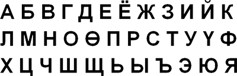
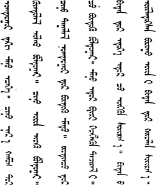

Language

Mongolian, belongs to the Altai group of languages (which include Finnish, Turkish, Kazak, Uzbek and Korean). It is spoken by about seven million people in the world including Mongolians, Inner Mongolians, Buriyats, Kalkmycks and Tuvinians. In Mongolian speech organs such as the nose and larynx take relatively less participation but tongue, teeth, palate and lips take an active part in producing sounds. It is a language rich in vocabulary so it has an ample opportunity to translate from any foreign language rendering the meaning of different expressions and ideas.

Because of the specific mode of life, customs and environments, there are a lot of terms and expressions not easy to translate into other languages and render their meanings. There are also many proverbs relating to Mongolian life (for example — While your father is alive, get acquainted with people, while you have horses, go and see far away lands.) The Mongol script has five main vowels and 22 consonants and is written vertically. It can be written quickly and therefore considered similar to shorthand. In many cases, the Mongolian writing system does not correspond with pronunciation. In this respect it is similar to written and spoken English. Because of these complications, Mongols tried to adopt the Square (Pags-pa) script in 1269, the Todu Script in 1648, the Soyombo Script in 1686 and the Cyrillic Script in 1941.
The latter, Cyrillic Script was successfully adopted unlike the others, and helped to erase illiteracy among the population. The Mongolian Cyrillic Alphabet has 35 letters. There have been attempts to revive the old Mongolian Script but so far, there has been little success.
Brief About Mongolian Names
Mongolians do not use surnames in the way that most Westerners, Chinese or Japanese do. Since the socialist period, patronymics — at that time called ovog, now known as etsgiin ner — are used instead of a surname. If the father's name is not legally established (i.e. by marriage) or altogether unknown, a matronymic is used. The patro- or matronymic is written before the given name.
Therefore, if a man with given name Tsakhia has a son, and gives the son the name Elbegdorj, the son's full name, as it appears in passports and the like, is Tsakhia Elbegdorj. Very frequently, as in texts and speech, the patronymic is given in genitive case, i.e. Tsakhiagiin Elbegdorj, with (in this case) -giin being the genitive suffix. However, the patronymic is rather insignificant in everyday use and usually just abbreviated to an initial - Ts. Elbegdorj. People are normally just referred to and addressed by their given name (Elbegdorj guai - 'Mr. Elbegdorj'), and the patronymic is only used to keep two people with a common given name apart. Even then, they are usually just kept apart by their initials, not by the full patronymic. There are cases in which a matronymic has been legally bestowed for one or the other reason, while a patronymic is known. If the patronymic is to be conveyed anyway, this can take a form like Altan Choi ovogt Dumaagiin Sodnom with the patronymic preceding the word ovog that takes the suffix -t 'having'.
The basic differences between Mongolian and Anglo-Saxon names, in connection with trying to fit Mongolian names into foreign schemata, frequently lead to confusion. For example, O. Gundegmaa, a Mongolian shooter, is often incorrectly referred to as Otryad, i.e. by the (given) name of her father.
Since 2000, Mongolians have been officially using clan names — ovog, the same word that was used for the patronymics during the socialist period — on their ID cards. Many people chose the names of the ancient clans and tribes such Borjigin, Besud, Jalair, etc. Others chose the names of the native places of their ancestors, or the names of their most ancient known ancestor. Some just decided to pass their own given names (or modifications of their given names) to their descendants as clan names. A few chose other attributes of their lives as surnames; Mongolia's first cosmonaut Gurragchaa chose 'Sansar' (Outer space). Clan names precede the patronymics and given names, as in Besud Tsakhiagiin Elbegdorj. In practice, these clan names seem to have had no significant effect — nor are they included in Mongolian passports.
From www.wikipedia.org